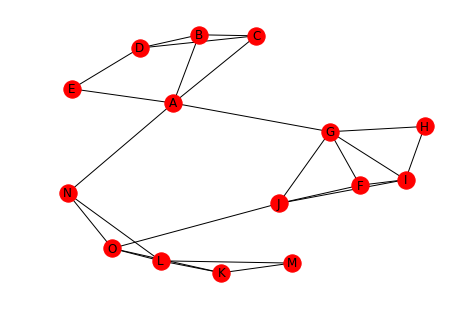
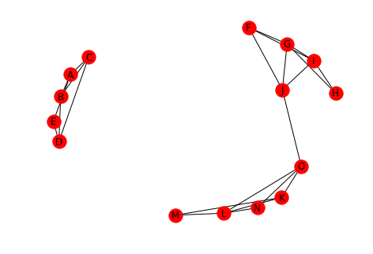
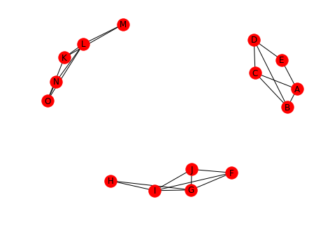
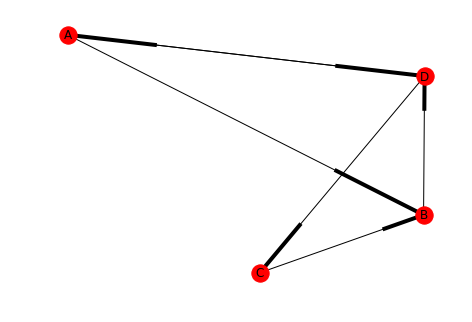
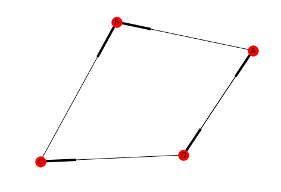
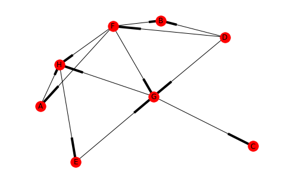
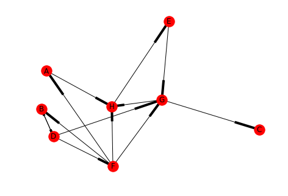
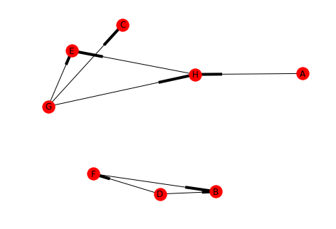
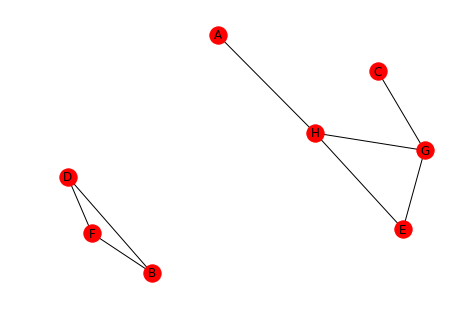

Connected Components
# pypi import networkx from networkx import ( draw, DiGraph, Graph, )
% matplotlib inline
1 Undirected Graphs
1.1 Connected Graphs
An unconnected graph is connected if every pair of nodes has a path between them.
left = tuple("AAAAABBCDFFFGGGHIJKKKLLLN") right = tuple("BECGNCDDEGIJHIJIJOLMOMNOO") undirected = Graph() undirected.add_edges_from(list(zip(left, right))) draw(undirected, with_labels=True)
Is this graph connected? It looks like it, since every node has an edge to it.
print(networkx.is_connected(undirected))
True
To make this graph unconnected you need to remove some edges that connect sub-graphs.
undirected.remove_edges_from([("A", "G"), ("A", "N")]) draw(undirected, with_labels=True)
print(networkx.is_connected(undirected))
False
1.2 Connected Components
A connected component is a subset of nodes where:
- Every node in the subset has a path to every other node
- No node outside the subset has a path to a node in the subset
Let's break the graph a little more.
undirected.remove_edge("J", "O") draw(undirected, with_labels=True)
We now have three connected components.
print(networkx.number_connected_components(undirected))
3
Which we can inspect.
for component in networkx.connected_components(undirected): print(component)
{'J', 'I', 'G', 'H', 'F'}
{'N', 'M', 'O', 'K', 'L'}
{'D', 'B', 'C', 'E', 'A'}
We can also pick out a node from one of the components and get the sub-set.
print(networkx.node_connected_component(undirected, "A"))
{'B', 'D', 'C', 'A', 'E'}
Which you can see is the third connected component in the example above.
2 Directed Graphs
Directed graphs have similar ideas with regard to connectivity when compared to undirected graphs, but with a strong and weak version for each.
2.1 Strongly Connected
A strongly connected graph is a directed graph where for every pair of nodes there is a directed path in both directions.
left = tuple("AABCDD") right = tuple("BDDBCA") directed = DiGraph() directed.add_edges_from(list(zip(left, right))) draw(directed, with_labels=True)
For some reason networkx uses boxes instead of arrow-heads, but hopefully you get the idea.
print(networkx.is_strongly_connected(directed))
True
2.2 Weakly Connected
A directed graph is weakly connected if, when all the edges are replaced by undirected edges (converting it to an undirected graph) then the graph is connected.
directed.remove_edge("B", "D") print(networkx.is_strongly_connected(directed)) print(networkx.is_weakly_connected(directed))
False True
draw(directed, with_labels=True)
Our new graph isn't strongly connected because there's no path from B to A (or B to C, etc.). But it is weakly connected since removing the directions just makes it a loop.
2.3 Strongly Connected Component
This is a subset of nodes in a directed graph where:
- Every node in the subset has a directed path to every other node
- No node outside the subset has a directed path to and from every node in the subset
left = tuple("ADDDEFFFFGGH") right = tuple("HBFGGABGHHCE") directed_2 = DiGraph() directed_2.add_edges_from(list(zip(left, right))) draw(directed_2, with_labels=True)
print(networkx.is_strongly_connected(directed_2))
False
You can see that the graph is not strongly connected (there's no path to E, for instance) but is there a strongly connected component within it?
for component in networkx.strongly_connected_components(directed_2): print(component)
{'C'}
{'H', 'G', 'E'}
{'A'}
{'B'}
{'F'}
{'D'}
In this case H, G, and E are a strongly connected component (as are each of the other individual nodes). What if we add a path from B to D?
directed_2.add_edge("B", "D") draw(directed_2, with_labels=True)
for component in networkx.strongly_connected_components(directed_2): print(component)
{'C'}
{'H', 'G', 'E'}
{'A'}
{'B', 'F', 'D'}
Now there are two interesting strongly connected components and two not so interesting ones.
2.4 Weakly Connected Components
A weakly connected component is one where a directed graph is converted into an undirected graph and the sub-set of nodes is a connected component.
directed_2.remove_edges_from([("F", "A"), ("F", "H"), ("F", "G"), ("D", "G"), ("B", "D"), ("E", "G")]) directed_2.add_edge("G", "E") draw(directed_2, with_labels=True)
for component in networkx.strongly_connected_components(directed_2): print(component)
{'C'}
{'E'}
{'H'}
{'A'}
{'B'}
{'F'}
{'D'}
{'G'}
undirected_2 = directed_2.to_undirected() draw(undirected_2, with_labels=True)
Looking at the converted graph you can see that there are two connected components.
for component in networkx.connected_components(undirected_2): print(component)
{'A', 'H', 'G', 'C', 'E'}
{'D', 'B', 'F'}
An important thing to note is that A and C are part of their connected component, even though visually they look like they're dangling out there.
You can also skip the conversion and let network x do it for you.
for component in networkx.weakly_connected_components(directed_2): print(component)
{'G', 'C', 'H', 'E', 'A'}
{'B', 'F', 'D'}